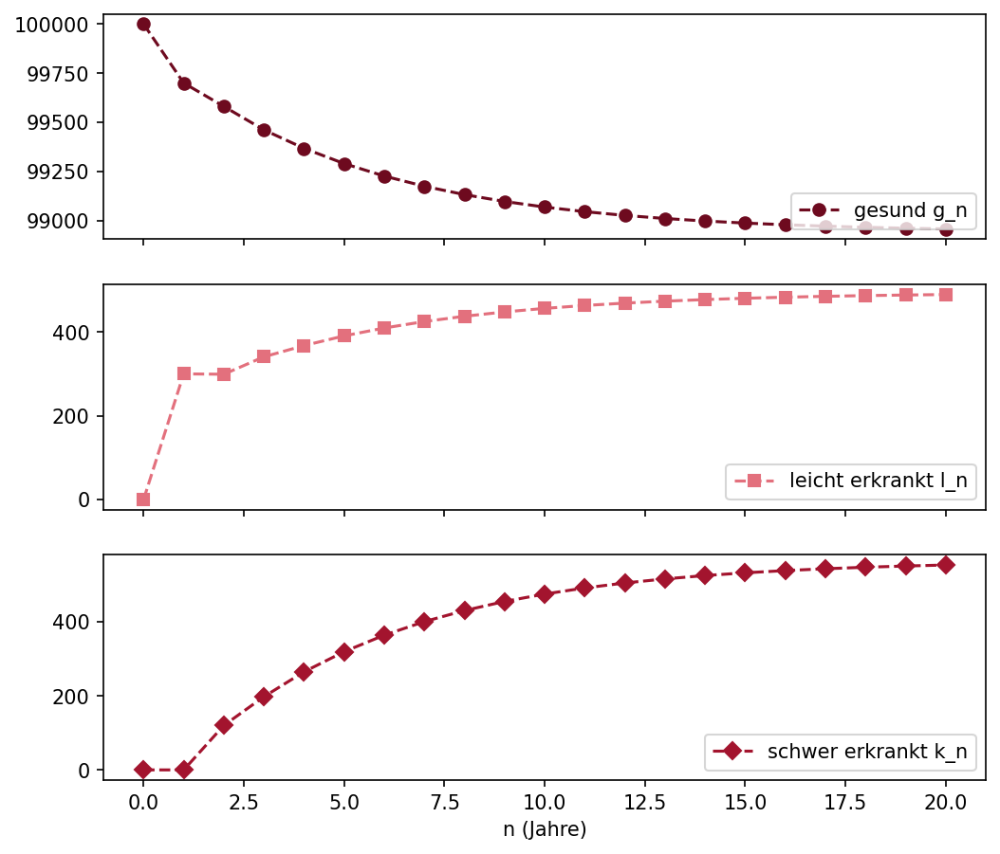
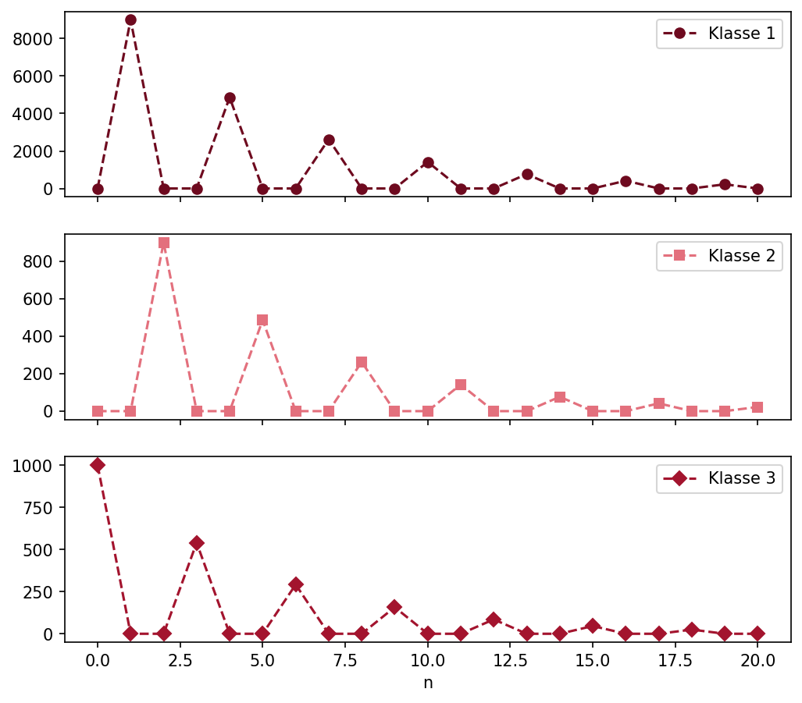

Kapitel 2 · Diskrete dynamische Systeme mit mehreren Variablen
2.2Matrix-Modelle
Sind alle Rekursionsvorschriften linear, schreibt man das System kompakt als xn+1 = A xn mit einer Matrix A und dem Zustandsvektor xn. Ein Schritt ist dann eine Multiplikation Matrix mal Vektor. Beispiele sind ein Krankheitsverlauf mit drei Gruppen und das Leslie-Modell für Altersklassen.
Zu jeder Abbildung des Abschnitts finden Sie das Programm, das sie erzeugt. Ändern Sie Parameter und Startwerte und beobachten Sie, was passiert. Abbildungs- und Gleichungsnummern beziehen sich auf das Buch.
Abb. 2.7
Krankheitsverlauf
xn+1 = A xn, x = (g, l, k): gesund, leicht und schwer erkrankt
Jede Spalte von A gibt an, wie sich eine Gruppe in einem Jahr auf die drei Gruppen verteilt. Weil die Spaltensummen 1 sind, bleibt die Gesamtzahl von 100 000 Personen erhalten.

# Abb. 2.7: Krankheitsverlauf als lineares System (Buch, Abschnitt 2.2, Gl. 2.8)
# x_{n+1} = A x_n mit x = (gesund, leicht erkrankt, schwer erkrankt), x_0 = (100000, 0, 0), ein Schritt = ein Jahr
# (c) 2026 Philipp Kügler · Programm zum Buch „Dynamische Systeme in den Lebenswissenschaften“ · MIT-Lizenz (siehe LICENSE)
using Printf, Plots, LinearAlgebra
A = [0.997 0.6 0;
0.003 0 0.35;
0 0.4 0.65]
N = 20
X = zeros(3, N + 1)
X[:, 1] = [100000, 0, 0]
for k in 1:N
X[:, k + 1] = A * X[:, k] # Matrix mal Vektor
end
@printf("x_20 = (%.0f, %.0f, %.0f)\n", X[:, end]...)
s = vec(sum(A, dims = 1))
@printf("Spaltensummen von A: %g %g %g -> die Gesamtzahl bleibt erhalten: %.0f\n", s..., sum(X[:, end]))
namen = ["gesund g_n", "leicht erkrankt l_n", "schwer erkrankt k_n"]
farben = [RGB(0.43, 0.04, 0.12), RGB(0.89, 0.44, 0.49), RGB(0.64, 0.08, 0.18)]; zeichen = [:circle, :rect, :diamond]
bilder = [begin
b = plot(0:N, X[i, :], ls = :dash, marker = zeichen[i], color = farben[i], label = namen[i], legend = :right)
b
end for i in 1:3]
display(plot(bilder..., layout = (3, 1), size = (800, 700), xlabel = "n (Jahre)"))% Abb. 2.7: Krankheitsverlauf als lineares System (Buch, Abschnitt 2.2, Gl. 2.8)
% x_{n+1} = A x_n mit x = (gesund, leicht erkrankt, schwer erkrankt), x_0 = (100000, 0, 0), ein Schritt = ein Jahr
% (c) 2026 Philipp Kügler · Programm zum Buch „Dynamische Systeme in den Lebenswissenschaften“ · MIT-Lizenz (siehe LICENSE)
A = [0.997 0.6 0;
0.003 0 0.35;
0 0.4 0.65];
N = 20;
X = zeros(3, N + 1);
X(:, 1) = [100000; 0; 0];
for k = 1:N
X(:, k + 1) = A * X(:, k); % Matrix mal Vektor
end
fprintf('x_20 = (%.0f, %.0f, %.0f)\n', X(:, end));
fprintf('Spaltensummen von A: %g %g %g -> die Gesamtzahl bleibt erhalten: %.0f\n', sum(A), sum(X(:, end)));
namen = {'gesund g_n', 'leicht erkrankt l_n', 'schwer erkrankt k_n'};
farben = [0.43 0.04 0.12; 0.89 0.44 0.49; 0.64 0.08 0.18]; marker = 'osd';
for i = 1:3
subplot(3, 1, i);
plot(0:N, X(i, :), ['--' marker(i)], 'Color', farben(i, :)); legend(namen{i}, 'Location', 'southeast');
end
xlabel('n (Jahre)');# Abb. 2.7: Krankheitsverlauf als lineares System (Buch, Abschnitt 2.2, Gl. 2.8)
# x_{n+1} = A x_n mit x = (gesund, leicht erkrankt, schwer erkrankt), x_0 = (100000, 0, 0), ein Schritt = ein Jahr
# (c) 2026 Philipp Kügler · Programm zum Buch „Dynamische Systeme in den Lebenswissenschaften“ · MIT-Lizenz (siehe LICENSE)
import numpy as np
import matplotlib.pyplot as plt
A = np.array([[0.997, 0.6, 0],
[0.003, 0, 0.35],
[0, 0.4, 0.65]])
N = 20
X = np.zeros((N + 1, 3))
X[0] = [100000, 0, 0]
for n in range(N):
X[n + 1] = A @ X[n] # Matrix mal Vektor
print("x_20 = (%.0f, %.0f, %.0f)" % tuple(X[N]))
print("Spaltensummen von A: %g %g %g" % tuple(A.sum(axis=0)), "-> die Gesamtzahl bleibt erhalten: %.0f" % X[N].sum())
fig, axs = plt.subplots(3, 1, figsize=(8, 7), sharex=True)
farben = [(0.43, 0.04, 0.12), (0.89, 0.44, 0.49), (0.64, 0.08, 0.18)]
for i, (name, m) in enumerate(zip(["gesund g_n", "leicht erkrankt l_n", "schwer erkrankt k_n"], "osD")):
axs[i].plot(np.arange(N + 1), X[:, i], "--", marker=m, color=farben[i], label=name)
axs[i].legend(loc="lower right")
axs[2].set_xlabel("n (Jahre)")
plt.show()# Abb. 2.7: Krankheitsverlauf als lineares System (Buch, Abschnitt 2.2, Gl. 2.8)
# x_{n+1} = A x_n mit x = (gesund, leicht erkrankt, schwer erkrankt), x_0 = (100000, 0, 0), ein Schritt = ein Jahr
# (c) 2026 Philipp Kügler · Programm zum Buch „Dynamische Systeme in den Lebenswissenschaften“ · MIT-Lizenz (siehe LICENSE)
A <- matrix(c(0.997, 0.6, 0,
0.003, 0, 0.35,
0, 0.4, 0.65), nrow = 3, byrow = TRUE)
N <- 20
X <- matrix(0, 3, N + 1)
X[, 1] <- c(100000, 0, 0)
for (k in 1:N) X[, k + 1] <- A %*% X[, k] # Matrix mal Vektor
cat(sprintf("x_20 = (%.0f, %.0f, %.0f)\n", X[1, N + 1], X[2, N + 1], X[3, N + 1]))
cat(sprintf("Spaltensummen von A: %g %g %g -> die Gesamtzahl bleibt erhalten: %.0f\n", colSums(A)[1], colSums(A)[2], colSums(A)[3], sum(X[, N + 1])))
namen <- c("gesund g_n", "leicht erkrankt l_n", "schwer erkrankt k_n")
farben <- c(rgb(0.43, 0.04, 0.12), rgb(0.89, 0.44, 0.49), rgb(0.64, 0.08, 0.18)); zeichen <- c(16, 15, 18)
par(mfrow = c(3, 1), mar = c(4, 4, 1, 1))
for (i in 1:3) {
plot(0:N, X[i, ], type = "o", lty = 2, pch = zeichen[i], col = farben[i], xlab = if (i == 3) "n (Jahre)" else "", ylab = "")
legend("bottomright", legend = namen[i], col = farben[i], pch = zeichen[i], lty = 2)
}Ausgabe im Befehlsfenster
x_20 = (98957, 490, 553)
Spaltensummen von A: 1 1 1 -> die Gesamtzahl bleibt erhalten: 100000Abb. 2.9
Leslie-Modell mit drei Altersklassen
x1,n+1 = 9 x3,n, x2,n+1 = 0.1 x1,n, x3,n+1 = 0.6 x2,n
Nur die älteste Klasse bekommt Nachwuchs. Die Population pulsiert daher mit Periode 3, und in jeder Periode schrumpft sie um den Faktor 9 · 0.1 · 0.6 = 0.54: Sie stirbt aus.

# Abb. 2.9: Leslie-Modell mit drei Altersklassen (Buch, Abschnitt 2.2, Gl. 2.11)
# x_{n+1} = L x_n mit Geburtenrate 9 der Klasse 3 und Überlebensraten 0.1 und 0.6, x_0 = (0, 0, 1000)
# (c) 2026 Philipp Kügler · Programm zum Buch „Dynamische Systeme in den Lebenswissenschaften“ · MIT-Lizenz (siehe LICENSE)
using Printf, Plots, LinearAlgebra
L = [0 0 9;
0.1 0 0;
0 0.6 0]
N = 20
X = zeros(3, N + 1)
X[:, 1] = [0, 0, 1000]
for k in 1:N
X[:, k + 1] = L * X[:, k]
end
println("Klasse 3 alle drei Schritte: ", join([@sprintf("%.1f", x) for x in X[3, 1:3:end]], " "))
@printf("Faktor pro Periode: 9 * 0.1 * 0.6 = %g < 1, die Population stirbt aus\n", 9 * 0.1 * 0.6)
namen = ["Klasse 1", "Klasse 2", "Klasse 3"]
farben = [RGB(0.43, 0.04, 0.12), RGB(0.89, 0.44, 0.49), RGB(0.64, 0.08, 0.18)]; zeichen = [:circle, :rect, :diamond]
bilder = [begin
b = plot(0:N, X[i, :], ls = :dash, marker = zeichen[i], color = farben[i], label = namen[i], legend = :right)
b
end for i in 1:3]
display(plot(bilder..., layout = (3, 1), size = (800, 700), xlabel = "n"))% Abb. 2.9: Leslie-Modell mit drei Altersklassen (Buch, Abschnitt 2.2, Gl. 2.11)
% x_{n+1} = L x_n mit Geburtenrate 9 der Klasse 3 und Überlebensraten 0.1 und 0.6, x_0 = (0, 0, 1000)
% (c) 2026 Philipp Kügler · Programm zum Buch „Dynamische Systeme in den Lebenswissenschaften“ · MIT-Lizenz (siehe LICENSE)
L = [0 0 9;
0.1 0 0;
0 0.6 0];
N = 20;
X = zeros(3, N + 1);
X(:, 1) = [0; 0; 1000];
for k = 1:N
X(:, k + 1) = L * X(:, k);
end
fprintf('Klasse 3 alle drei Schritte: '); fprintf('%.1f ', X(3, 1:3:end)); fprintf('\n');
fprintf('Faktor pro Periode: 9 * 0.1 * 0.6 = %g < 1, die Population stirbt aus\n', 9 * 0.1 * 0.6);
farben = [0.43 0.04 0.12; 0.89 0.44 0.49; 0.64 0.08 0.18]; marker = 'osd';
for i = 1:3
subplot(3, 1, i);
plot(0:N, X(i, :), ['--' marker(i)], 'Color', farben(i, :)); legend(sprintf('Klasse %d', i));
end
xlabel('n');# Abb. 2.9: Leslie-Modell mit drei Altersklassen (Buch, Abschnitt 2.2, Gl. 2.11)
# x_{n+1} = L x_n mit Geburtenrate 9 der Klasse 3 und Überlebensraten 0.1 und 0.6, x_0 = (0, 0, 1000)
# (c) 2026 Philipp Kügler · Programm zum Buch „Dynamische Systeme in den Lebenswissenschaften“ · MIT-Lizenz (siehe LICENSE)
import numpy as np
import matplotlib.pyplot as plt
L = np.array([[0, 0, 9],
[0.1, 0, 0],
[0, 0.6, 0]])
N = 20
X = np.zeros((N + 1, 3))
X[0] = [0, 0, 1000]
for n in range(N):
X[n + 1] = L @ X[n]
print("Klasse 3 alle drei Schritte:", " ".join(f"{x:.1f}" for x in X[0:N + 1:3, 2]))
print(f"Faktor pro Periode: 9 * 0.1 * 0.6 = {9 * 0.1 * 0.6:g} < 1, die Population stirbt aus")
fig, axs = plt.subplots(3, 1, figsize=(8, 7), sharex=True)
farben = [(0.43, 0.04, 0.12), (0.89, 0.44, 0.49), (0.64, 0.08, 0.18)]
for i, m in enumerate("osD"):
axs[i].plot(np.arange(N + 1), X[:, i], "--", marker=m, color=farben[i], label=f"Klasse {i + 1}")
axs[i].legend(loc="upper right")
axs[2].set_xlabel("n")
plt.show()# Abb. 2.9: Leslie-Modell mit drei Altersklassen (Buch, Abschnitt 2.2, Gl. 2.11)
# x_{n+1} = L x_n mit Geburtenrate 9 der Klasse 3 und Überlebensraten 0.1 und 0.6, x_0 = (0, 0, 1000)
# (c) 2026 Philipp Kügler · Programm zum Buch „Dynamische Systeme in den Lebenswissenschaften“ · MIT-Lizenz (siehe LICENSE)
L <- matrix(c(0, 0, 9,
0.1, 0, 0,
0, 0.6, 0), nrow = 3, byrow = TRUE)
N <- 20
X <- matrix(0, 3, N + 1)
X[, 1] <- c(0, 0, 1000)
for (k in 1:N) X[, k + 1] <- L %*% X[, k]
cat("Klasse 3 alle drei Schritte:", sprintf("%.1f", X[3, seq(1, N + 1, 3)]), "\n")
cat(sprintf("Faktor pro Periode: 9 * 0.1 * 0.6 = %g < 1, die Population stirbt aus\n", 9 * 0.1 * 0.6))
namen <- c("Klasse 1", "Klasse 2", "Klasse 3")
farben <- c(rgb(0.43, 0.04, 0.12), rgb(0.89, 0.44, 0.49), rgb(0.64, 0.08, 0.18)); zeichen <- c(16, 15, 18)
par(mfrow = c(3, 1), mar = c(4, 4, 1, 1))
for (i in 1:3) {
plot(0:N, X[i, ], type = "o", lty = 2, pch = zeichen[i], col = farben[i], xlab = if (i == 3) "n" else "", ylab = "")
legend("bottomright", legend = namen[i], col = farben[i], pch = zeichen[i], lty = 2)
}Ausgabe im Befehlsfenster
Klasse 3 alle drei Schritte: 1000.0 540.0 291.6 157.5 85.0 45.9 24.8
Faktor pro Periode: 9 * 0.1 * 0.6 = 0.54 < 1, die Population stirbt ausMATLAB-Apps aus der Vorlesung
Herunterladen, in einen Ordner legen und in MATLAB den Namen ohne Endung eingeben, z. B. leslie_app. Die Apps nutzen die grafische Oberfläche von MATLAB und laufen nicht in GNU Octave.
- leslie_app.mLeslie-Modell mit drei Altersklassen